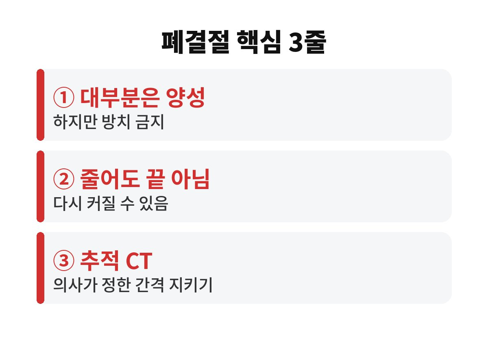
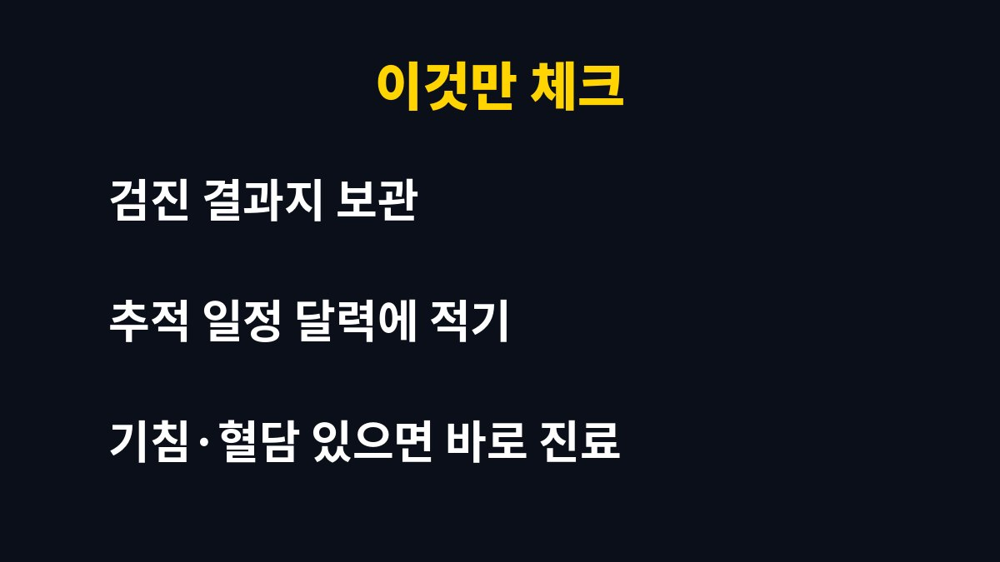

폐결절이 치료 없이 절반으로 줄었더라도 추적검사를 멈추면 안 됩니다. 건강검진에서 폐결절 소견을 들은 직장인이라면, 작아졌다는 말에 안심했다가 몇 달 뒤 다시 커졌다는 소식을 듣게 될 수 있다는 걸 알고 계셨나요?
검진 결과지에 "결절"이라는 단어가 적혀 있으면 가슴이 철렁하죠. 그런데 다음 검사에서 크기가 줄었다는 말을 들으면 "아, 없어지나 보다" 하고 마음이 놓입니다. 오늘은 폐결절 추적검사가 왜 끝까지 중요한지 편하게 풀어 볼게요.
폐결절은 폐 속에 생긴 작은 동그란 덩어리 그림자를 말합니다. 흉부 CT나 X-ray를 찍으면 의외로 자주 발견돼요. 예전 염증이 남은 흔적, 작은 상처 조직, 양성 종양인 경우가 많아서 대부분은 걱정할 병이 아닌 경우가 많습니다.
문제는 겉으로 봐서는 이게 흔적인지 초기 암인지 구분하기 어려울 때가 있다는 점입니다. 그래서 의사들은 바로 판단하지 않고 일정 간격을 두고 다시 찍어서 크기와 모양이 변하는지를 지켜봅니다. 이 과정이 바로 폐결절 추적검사예요.
이번에 화제가 된 사례가 딱 이 부분입니다. 치료 없이 폐결절이 절반으로 줄어들어 한시름 놓았는데, 그 뒤에 다시 커지면서 폐암으로 확인된 경우가 소개됐거든요. 염증 때문에 부풀어 있던 부분이 가라앉으면서 작아 보였을 뿐, 안쪽의 진짜 병변은 그대로였을 수 있다는 얘기입니다.
물론 모든 결절이 이렇게 되는 건 아닙니다. 그래도 "줄었으니 끝"이라고 단정하기는 어렵다는 게 핵심이에요. 크기만이 아니라 결절의 모양, 안쪽 밀도, 주변 변화까지 같이 보고 판단해야 하기 때문에, 폐결절 추적검사 일정은 담당 의사가 괜찮다고 할 때까지 지키는 게 안전합니다.

가장 흔한 실수는 "바쁘니까 다음에" 하고 미루다가 1년, 2년이 훌쩍 지나는 겁니다. 폐결절은 증상이 거의 없어서 더 잊기 쉬워요. 아래 세 가지만 해 두셔도 훨씬 든든합니다.
① 검진 결과지를 사진으로 찍어 보관하세요. 다음 검사 때 비교하려면 이전 영상과 결과가 꼭 필요합니다. 병원을 옮기면 더 중요해져요.
② 추적 일정을 달력과 휴대폰 알림에 바로 넣으세요. 진료실에서 들은 간격은 집에 오는 순간 잊힙니다. 날짜를 적어 두는 것만으로도 검사를 놓칠 확률이 크게 줄어요.
③ 평소와 다른 증상이 생기면 일정과 상관없이 진료를 받으세요. 2주 이상 계속되는 기침, 가래에 피가 섞임, 이유 없는 체중 감소, 쉰 목소리가 이어진다면 다음 검사일을 기다리지 마세요.
그리고 검사 때 의사에게 꼭 물어볼 질문도 있어요. "이 결절은 어떤 종류로 보이나요?", "다음 검사는 정확히 언제가 좋을까요?", "그 사이에 조심할 증상은 무엇인가요?" 이 세 가지만 물어봐도 불안이 훨씬 줄어듭니다. 막연한 걱정은 정보가 생기는 순간 작아지는 법이거든요. 또 직장인은 검진 결과를 받고도 업무에 치여 병원 예약을 미루기 쉬운데, 점심시간이나 연차 하루로 충분히 해결되는 일이니 미루지 않으시길 바랍니다. 가족에게도 결과를 공유해 두면 일정을 대신 챙겨 줄 사람이 생겨서 훨씬 안전해요.
네, 그렇습니다. 흡연력이 길거나 가족 중에 폐암 환자가 있거나, 오래 미세먼지·분진에 노출되는 일을 하셨다면 같은 크기의 결절이라도 의사가 더 꼼꼼하게 추적하자고 할 수 있어요. 반대로 비흡연자의 작은 결절은 간격을 넉넉하게 잡는 경우도 있습니다. 어느 쪽이든 기준은 내 상황을 아는 의사가 정해 주는 거예요.
한 가지만 더 말씀드리면, 인터넷에서 비슷한 사례를 찾아보다가 괜히 겁을 먹는 분들이 많습니다. 사람마다 결절의 위치와 성질이 달라서 남의 경과를 내 몸에 그대로 대입하기는 어렵습니다. 다른 사람의 이야기는 참고만 하고, 판단은 내 영상을 직접 본 의사에게 맡기는 게 가장 정확해요.
정리하면 폐결절은 겁먹을 병이 아니라 지켜보는 병입니다. 줄었다는 말이 반갑더라도 추적 일정은 끝까지 지키고, 결과지는 잘 챙겨 두세요. 여러분은 지난 검진에서 들은 소견, 다음 검사일까지 기억하고 계신가요? 댓글로 알려 주시고, 도움이 되셨다면 구독도 부탁드려요.

본 글은 일반적인 건강 정보이며 진단·치료를 대신하지 않습니다. 증상이 있거나 질환이 있다면 전문의 상담을 권장합니다.